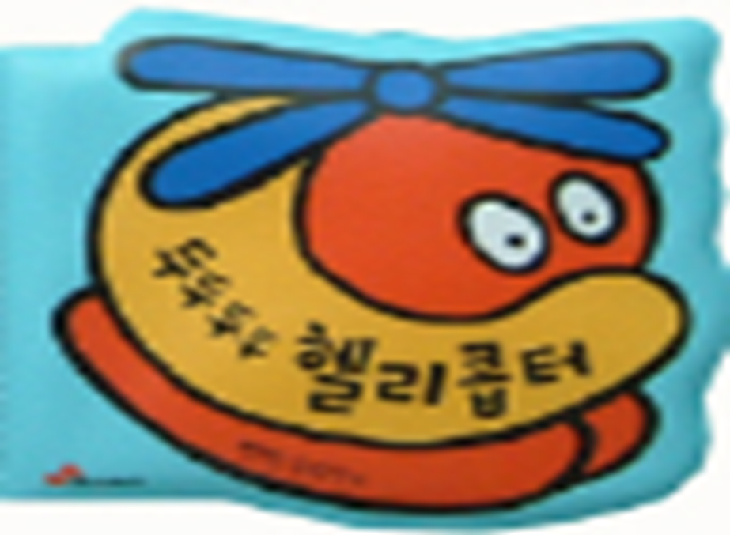
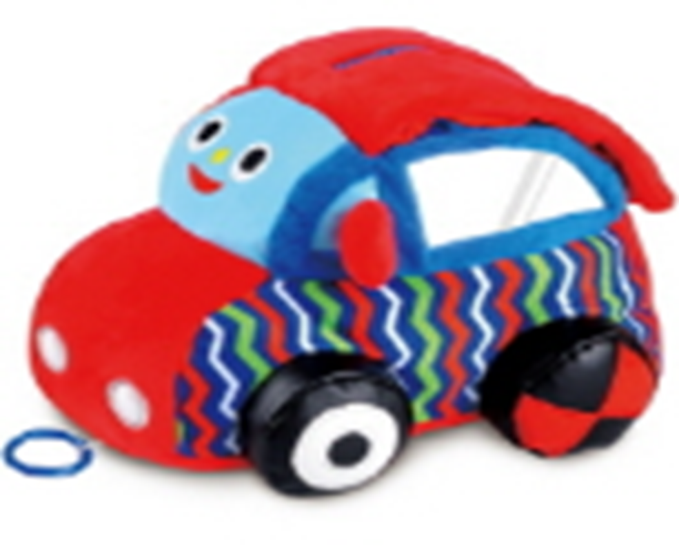
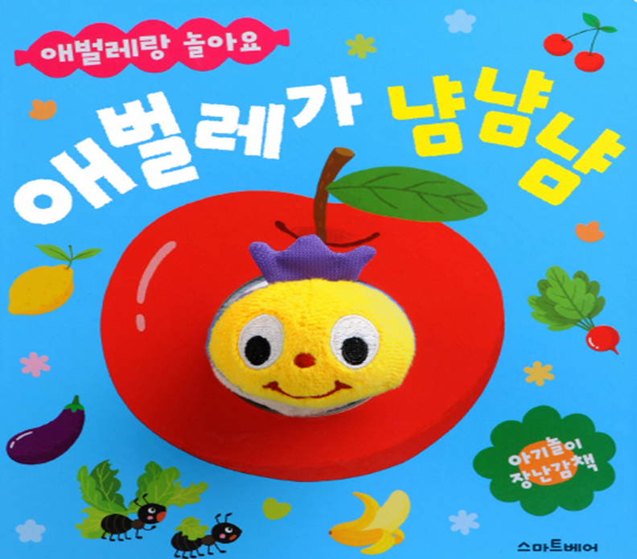
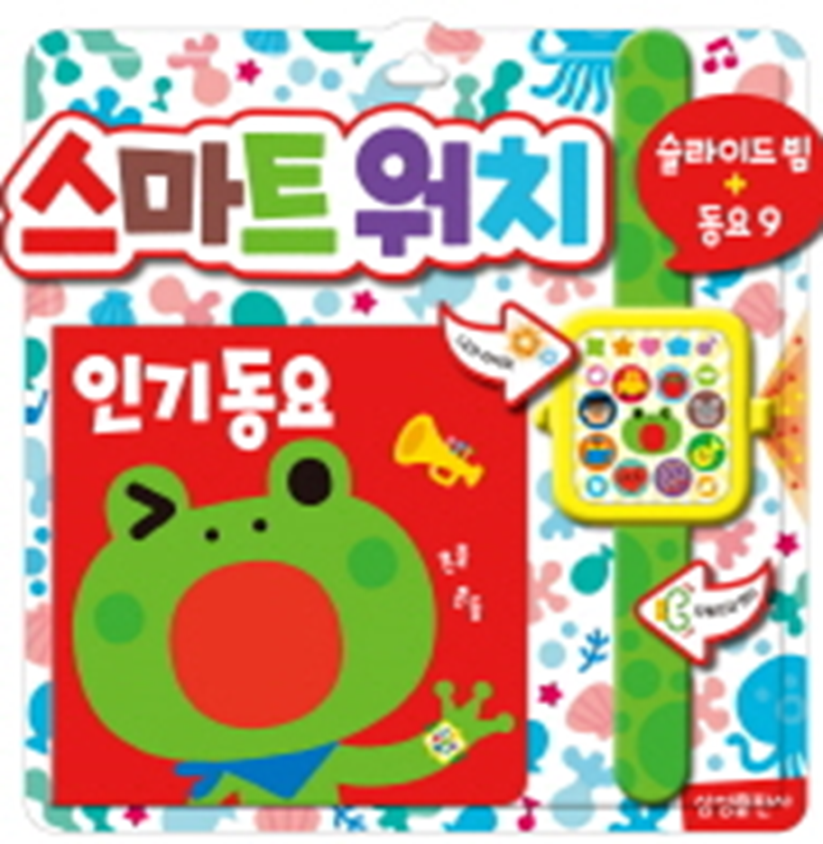
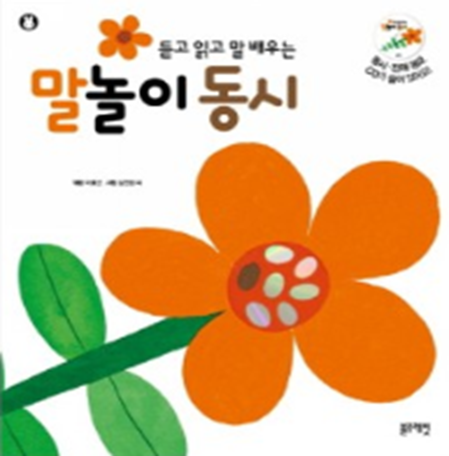
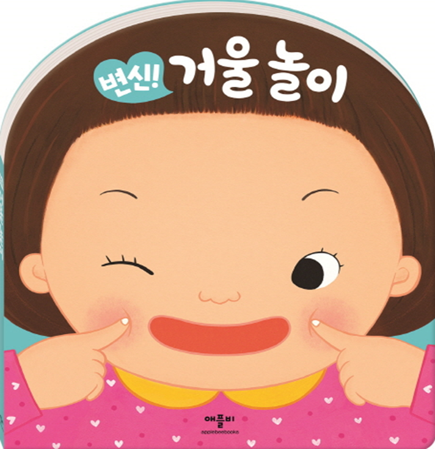

1. 신체발달을 위한 아동문학
1) 영아기 신체발달
영아기는 출생 시 고개조차 들 수 없는 상태였다가
혼자 걷게 되기까지 발달단계와 감각기관이 매우 빠른 속도로 발달한다.
2~3개월이면 고개를 가눌 수 있고,
3~4개월경에는 누워 있는 자세에서 물체를 양손으로 잡을 수 있다.
6~7개월경에는 머리를 완전히 가눌 수 있으며,
목과 어깨의 근육이 발달하며 복부와 등이 강해져 혼자서 앉을 수 있다.
8～9개월경에는 방향과 모양, 크기에 대한 형태 파악을 위해 손 전체로 조절하여 사물을 던지고 기어 다닐 수 있다.
10개월이 되면 서툴기는 하나 엄지와 검지 두 손가락을 사용해서 다루는 기술이 발달한다.
11~12개월이면 가구를 붙잡고 걸을 수 있으며, 물체를 그릇에 넣거나 빼고 쌓으려고 시도한다.
영아의 신체발달에서 대근육과 소근육발달 과정은 대부분 일정하지만 운동능력을 습득하는 시기는 개개인의 기질 및 가정환경, 영양 등 양육방법에 따라 개인차가 다양하게 있다.
2) 영아의 신체발달에 적합한 그림책
영아의 신체발달을 위한 그림책 예를 들면 다음과 같다.
영아들의 일상생활 내용이 담긴 ‘두두두두 헬리콥터’는 물고 빨아도 유해 요소로부터 안전하며 만지면 말랑말랑하고 누르면 삑삑삑 소리가 나도록 제작되어 있어서 목욕할 때 갖고 놀 수 있다.
‘꿈꾸는 자동차’는 자동차 앞의 파란색 손잡이를 잡아당기면 자동차가 천천히 가면서 기다란 헝겊책이 펼쳐져 움직이는 자동차를 따라 움직이며 대소근육의 운동 능력을 촉진시킨다.
'애벌레가 냠냠냠’은 표지에 있는 동글동글한 애벌레 인형을 잡아당기면 몸통이 길어지고 놓으면 제자리로 돌아가는 모습이 애벌레가 움직이는 듯하여 오감 자극으로 신체의 협응능력을 돕는 유익한 책이다.



2. 언어발달을 위한 아동문학
2) 영아기 언어발달
언어의 첫 단계는 울음(crying)으로 시작하는 것과 같이 여러 가지 울음소리를 나타낸다.
12개월 이전의 전언어기는 실제적인 언어를 사용하기 이전 단계이다.
전언어기(prelinguistic period) 에는 주로 울음, 옹알이, 표정, 몸짓 등을 의사소통의 수단으로 사용한다.
6~8개월 옹알이를 할 때 피드백을 주고 받으면(turn–taking) 점차 강화가 되어 자신의 욕구를 만족시키기 위해 다양한 형태의 억양, 강세 등 소리가 빈번해진다.
9~12개월이 되면 사회적 상호작용이 증가되어 이해할 수 있는 한 단어를 나타내고, 명명하기로 표현하고자 운율 및 리듬 등 내재적인 규칙이 있는 음성놀이를 즐긴다.
영아기는 눈과 손의 협응력이 시작과 더불어 인지발달을 하므로 그림책에 손가락을 짚어가며 읽어주면 그림책의 글과 그림의 연관성을 이해한다. 이에 따라 소리를 모방하고 말을 자연스럽게 나타낸다. 자신의 말소리와 주변에소 들리는 말소리를 통합시키는 능력을 발휘하면서 내재된 언어능력을 향상시켜갈 수 있게 된다.
2) 영아의 언어발달에 적합한 그림책
그림책에 있는 그림과 글을 CD 소리와 연결하여 제시하여 자연스럽고 친숙하도록 전달해야 언어발달에 유익해진다.
영아의 언어발달에 적합한 그림책 예를 들면 다음과 같다.
‘스마트워치 인기동요’는 영아가 스스로 주변 세계를 탐색하게 하고 그림책에 있는 사물의 이름을 반복할 수 있는 운율, 리듬, 동요 등을 반복해서 들려주는 작품이다.
‘말놀이 동시’는 의성어가 들어 있는 소리를 탐색이 가능한 는 운율과 일정한 리듬감에 따라 읽히도록 구성된 작품이다.
‘변신! 거울놀이’는 책 속의 안전 거울을 보며 다양한 표정이나 손짓을 지어 보면서 친숙한 동요를 부르며 어휘를 구사하도록 제공하는 작품이다.



출처. 김동례, 권순황, 선애순(2018). 아동문학. 공동체.
2023.02.14 - [문학] - 영아기 인지발달과 사회성 발달에 그림책이 가장 적합
영아기 인지발달과 사회성 발달에 그림책이 가장 적합
인지발달과 아동문학 영아는 감각경험과 신체발달을 통하여 뇌의 성장과 발달이 놀라운 속도로 대상영속성이 향상되어 간다. 특히 청각능력은 성인 수준을 갖게 되어 간단한 명령을 듣고 반응
think-sis.co.kr
2022.09.29 - [분류 전체보기] - 영아기 언어발달을 위한 지도 방법
영아기 언어발달을 위한 지도 방법
영아기는 자신을 둘러싼 환경과의 상호작용 속에서 모국어를 자연스럽게 습득할 수 있는 특성이 존재한다. 이 시기는 초기 발성이나 비언어적 의사소통에 민감하게 반응해 줄수록 효과적이다.
think-sis.co.kr